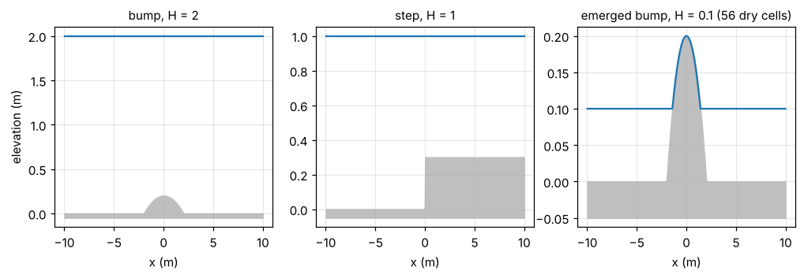
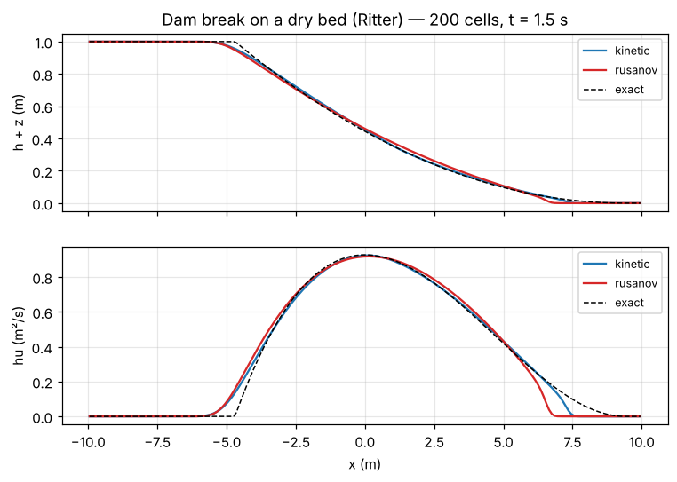
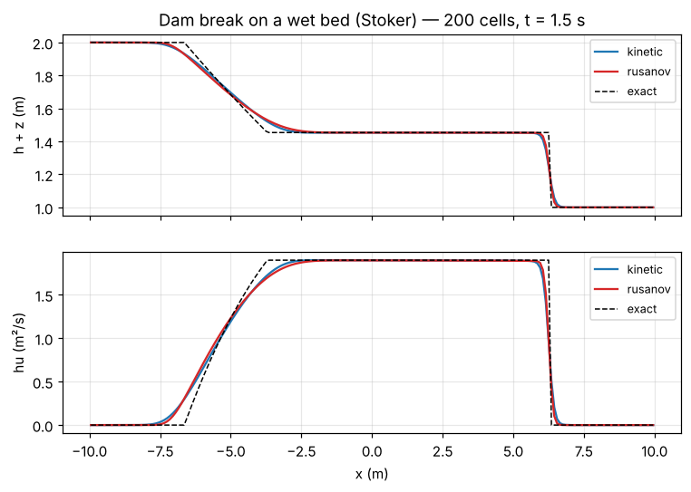
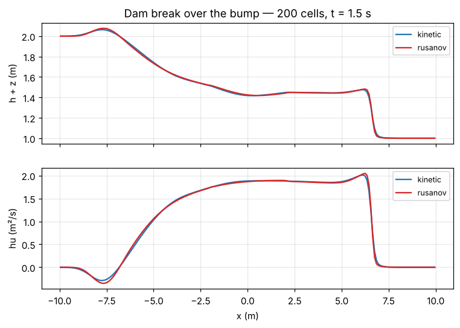
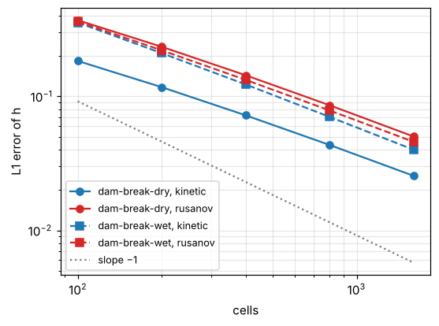
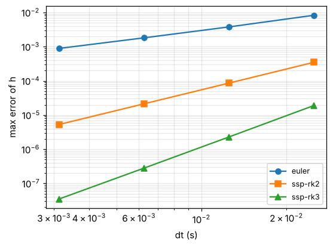
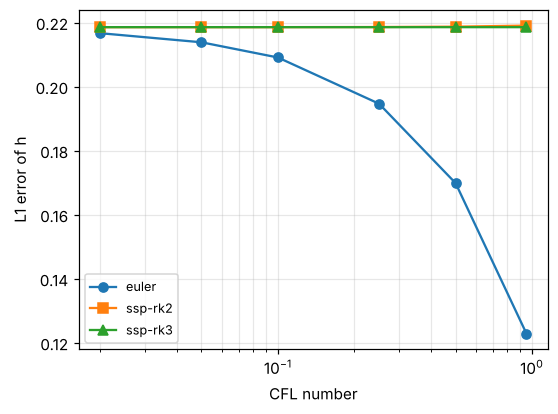

Validation¶
Every number on this page can be regenerated with
make && python3 scripts/make_doc_figures.py
and most of them are enforced by the test suite (make test).
The fluxes against the paper's definitions¶
The strongest check does not use the code's formulas at all. A Python reference builds the interface densities (3.7)-(3.8) directly from the Maxwellian \(\chi\), integrates their moments in \(\xi\) with an adaptive quadrature, and compares them with the fluxes returned by the C code on random pairs of states: dry cells, supercritical flows and steps in both directions.
| Check | Agreement |
|---|---|
| kinetic fluxes \(F^-\) and \(F^+\) against (3.5)-(3.8) | \(< 10^{-10}\) (relative) |
| mass flux single-valued (Remark 3.1) | \(< 10^{-13}\) |
| momentum defect \(= g\,\Delta Z\, h^{\text{jump}}\) (Ersoy 2026, Prop. 4.1) | \(3 \times 10^{-14}\) |
| \(II^q_3\) against a 30-digit reference | \(< 2 \times 10^{-15}\) (relative) |
Lake at rest¶

Maximum deviation from the initial state after 1.5 s, 1000 cells, forward Euler:
| Case | Scheme | max \(\lvert h - h_0 \rvert\) | max \(\lvert hu \rvert\) |
|---|---|---|---|
| bump, \(H = 2\) | kinetic | \(3.1 \times 10^{-15}\) | \(1.4 \times 10^{-14}\) |
| Rusanov | \(1.1 \times 10^{-15}\) | \(5.6 \times 10^{-15}\) | |
| step, \(H = 1\) | kinetic | \(2.2 \times 10^{-16}\) | \(7.6 \times 10^{-16}\) |
| Rusanov | \(1.1 \times 10^{-16}\) | \(5.1 \times 10^{-16}\) | |
| emerged bump, \(H = 0.1\) | kinetic | \(9.8 \times 10^{-17}\) | \(3.8 \times 10^{-17}\) |
| Rusanov | \(2.1 \times 10^{-17}\) | \(1.3 \times 10^{-17}\) |
Both schemes keep the lake at rest to round-off, including the case where the top of the bump is dry. The tests require \(10^{-12}\) for all three integrators.
Dam breaks against exact solutions¶
Dry bed (Ritter). The kinetic scheme follows the dry front better than Rusanov, whose front lags behind the exact one:

Wet bed (Stoker). The rarefaction, the middle state and the shock are captured by both schemes:

Over the bump, with no exact solution: the flow over the obstacle and the waves it reflects.

Convergence in space¶
L1 error of \(h\) at \(t = 1.5\) s as the grid is refined (forward Euler, default CFL):
| Case | Scheme | 100 | 200 | 400 | 800 | 1600 | Order |
|---|---|---|---|---|---|---|---|
| dry bed | kinetic | 0.184 | 0.117 | 0.0723 | 0.0434 | 0.0255 | 0.76 |
| dry bed | Rusanov | 0.370 | 0.235 | 0.144 | 0.0859 | 0.0502 | 0.77 |
| wet bed | kinetic | 0.356 | 0.210 | 0.123 | 0.0703 | 0.0400 | 0.81 |
| wet bed | Rusanov | 0.361 | 0.221 | 0.133 | 0.0786 | 0.0458 | 0.78 |

The schemes are first order; on solutions with a shock or a dry front the observed order is below 1, as expected. The kinetic scheme is about twice as accurate as Rusanov on the dry dam break.
Convergence in time¶
The space discretisation is first order, so on a refined grid the global error is \(O(\Delta x)\) whatever the integrator. The order in time is measured on a fixed grid (100 cells, periodic pulse, \(t = 0.5\) s) against a reference computed with SSP-RK3 and a time step 16 times smaller than the smallest one below:
| Integrator | \(\Delta t = 0.5/20\) | \(0.5/40\) | \(0.5/80\) | \(0.5/160\) | Order |
|---|---|---|---|---|---|
| Euler | \(8.3 \times 10^{-3}\) | \(3.8 \times 10^{-3}\) | \(1.8 \times 10^{-3}\) | \(8.9 \times 10^{-4}\) | 1.03 |
| SSP-RK2 | \(3.5 \times 10^{-4}\) | \(8.6 \times 10^{-5}\) | \(2.1 \times 10^{-5}\) | \(5.3 \times 10^{-6}\) | 2.01 |
| SSP-RK3 | \(1.9 \times 10^{-5}\) | \(2.3 \times 10^{-6}\) | \(2.8 \times 10^{-7}\) | \(3.5 \times 10^{-8}\) | 3.00 |

Forward Euler versus Runge-Kutta¶
At the default CFL number, forward Euler is more accurate than SSP-RK2 and SSP-RK3 on the dam breaks. This is not a bug: with upwind fluxes, the time error of forward Euler partly cancels the numerical diffusion of the space discretisation (for linear advection, upwind with Euler at CFL 1 is exact). The Runge-Kutta methods remove this cancellation and reach the error of the semi-discrete scheme at any CFL number; Euler converges to the same value as the CFL number decreases.
Wet dam break, 400 cells, L1 error of \(h\):
| Integrator | CFL 0.95 | 0.5 | 0.25 | 0.1 | 0.05 | 0.02 |
|---|---|---|---|---|---|---|
| Euler | 0.123 | 0.170 | 0.195 | 0.209 | 0.214 | 0.217 |
| SSP-RK2 | 0.219 | 0.219 | 0.219 | 0.219 | 0.219 | 0.219 |
| SSP-RK3 | 0.219 | 0.219 | 0.219 | 0.219 | 0.219 | 0.219 |

Higher-order time integration pays off together with a higher-order space discretisation (MUSCL reconstruction, or the discontinuous Galerkin extension of Ersoy, 2026).
Conservation and positivity¶
- Mass is conserved to round-off (\(< 10^{-12}\) relative) with periodic boundaries, walls, and on the dam breaks before the waves reach the boundaries.
- The water height never becomes negative, for both schemes and all integrators, including dry fronts.
Symmetries¶
Two metamorphic tests check whole simulations rather than single fluxes:
- Mirror. Running the mirror image (\(x \to -x\), \(u \to -u\)) of a case gives the mirror image of the solution: dam breaks, an emerged bump and a closed tank, for both schemes and several integrators.
- Translation. With periodic boundaries, shifting the initial state by \(k\) cells shifts the solution by \(k\) cells.
Both hold to the last bit on x86-64. They catch sign and index errors that no exact solution would reveal: an asymmetric wall boundary condition, introduced on purpose, fails eight of these checks.